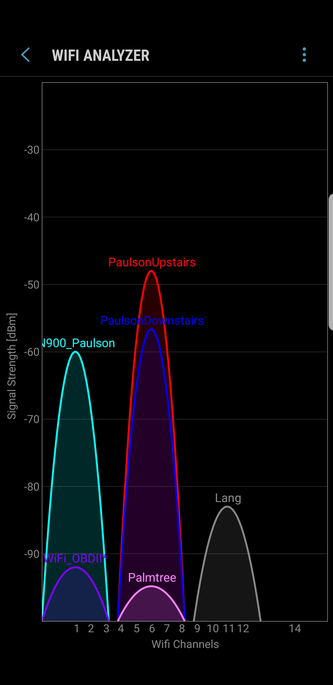

What good are simulation tools? Note: do not only rely on the book for the answer. Consult LinkedIn Learning and Wikipedia.
(25) 1. Briefly explain the importance of a simulation tool such as a virtual machine, in managing and maintaining a Windows Server 2016 environment.
(25) 2. Your boss asks you to figure out a way to run a very old program (pre-2000) that will no longer run on Windows 10. Research and figure out a way to solve her problem.
page 272 (p281 in 5e)
(25) 3. You want to create a local area network that protects the contents of the network server’s hard disks from disk crashes. List all the different techniques for providing this protection that have been presented thus far.
Windows Server 2008 and after use Active Directory for its directory service, and NetWare uses NDS. (25) 4. How are the two directory services alike?
page 273
You are creating a network at home that consists of multiple computers, a high-quality printer, and a router with access to a high-speed Internet connection. You do not need Windows 2008 server or NetWare version 6. (50) 5. Is there a particular desktop operating system that can be installed on each computer that will optimize the operations of your home network?
What is War Driving? Also see Wikipedia. And why should you care?
Use Xirrus 1.2 or later, available in the /ReadOnly/Summative08 folder of the class network drive. Use Vistumbler 10.6.5 or later, also available in the /ReadOnly/Summative08 folder of the class network drive.
Download and install Xirrus, review the above material, then answer the following questions. Feel free to work in your Project 2 groups.
Note: cannot use LT-20 on Win x64, skip GPS part of this assignment: To use the Earthmate LT-20 GPS unit, you will need to install a USB to Serial port converter, from the manufacturer, Delorme: Serial Port Emulator The .exe file is at: \\store\classes\20113000719\ReadOnly\SerialPortEmulator This is what NetStumbler 0.4 looks like when running, it is available, but may not work with your laptop wireless card:
(50) 6. What are typical uses of Xirrus, NetStumbler or Vistumbler or Xirrus (hint: help files are useful sources of information)?
Use the table below as a template, create an Excel spreadsheet to gather the following data. If you have GPS you can use Vistumbler and a GPS receiver record the following information on at least 10 Wireless Access Points in the Winona area. Or you can download an app to your smartphone and try that. Feel free to go further than Winona. You are encouraged to work with your MIS452 group members. But each student must submit a copy of their data.
Latitude (d m.mm)
(150) 7. Save your file 'Ex5WiFi.xlsx' in your ' ' folder.
Work with someone in class who has a smartphone. Search the internet for a Android or Apple WiFi scanner app for wireless networks, such as: LifeWire top 8 free Android wireless networking apps or:
Life Wire Top iOS Wireless networking apps Download and install the app of your choice. I installed OpenSignal(great for cell phone signals) and WiFi Analyzer on my Android Device. 
(50) 8. Use the Snipping Tool to make a screen shot of Vistumbler running on your laptop. Save the screen shot as "Ex5Vis" in your ' ' folder. You will be combining screen shots from several exercises at the end of this assignment, just as you did in Formative00-PDF File Creation.
(50) 9. Use whatever means is necessary to take a screen shot of a WiFi analyzer or OpenSignal type program on your cell phone and move it to your laptop. Save the screen shot as "Ex5Signal" in your ' ' folder. You will be combining screen shots from several exercises at the end of this assignment, just as you did in Formative00-PDF File Creation.
Use a web browser to verify that you have published your website to https://classes.winona.edu/... Check that your name, StarID, email, class, semester, section and all of your answers are correct and visible. From the menu choose File>Print... and using "Microsoft Print to PDF" save a copy of this assignment as a .pdf file in your ' ' folder.
(50) 10. Save your file 'WebPage.pdf' in your ' ' folder.
Create one .pdf (portable document format) file from the screen shots that you have taken by following these steps.
(50) 11. Save your file 'ScreenShots.pdf' in your ' ' folder.
Use PDFill to merge the WebPage.pdf file with the ScreenShots.pdf file, and save it as 'Summative01.pdf' in your ' ' folder.
(50) 12. Upload your file 'Summative08.pdf' to the D2L 'Summative08' Assignment folder.
Use a browser to view your completed and published website at: https://classes.winona.edu/... Ensure that you have linked this assignment on your home page. Note that your screen shots do not have to be completed to perform this step.